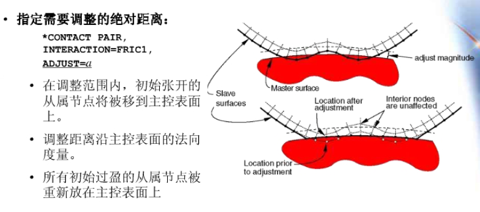
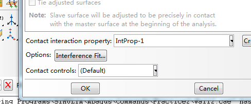
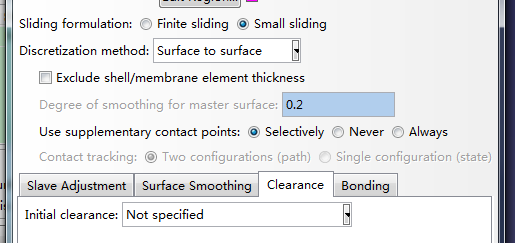
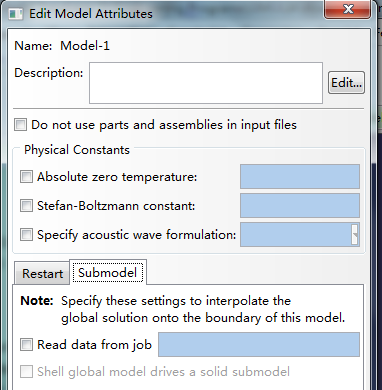
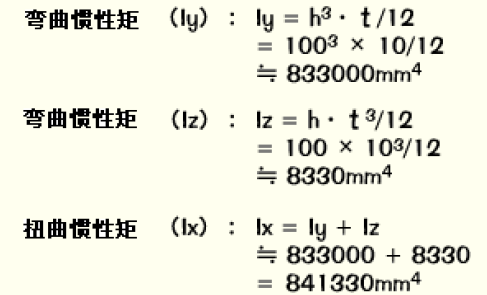

abaqus学习中的总结
\1. 接触中设置Adjust的理解：
这个命令主要还是用来初始化接触的。在分析开始之前，调整接触面中节点的初始位置，且不产生任何应力和应变。在分析过程中，由于残留的初始过盈引起的应变将被施加在接触面上。
模型的尺寸往往会存在数值误差，所以设置一个位置误差限度，用来调整从面节点的初始坐标，ADJUST=位置误差限度，其含义是：如果从面节点与主面的距离小于此限度，ABAQUS将调整这些节点的初始坐标，使其与主面的距离为0.这种调整不产生任何压力、应力、应变。
Explicit不允许接触表面的初始过盈，分析开始前，接触面上的节点将被自动调整，以删除任何初始过盈，在随后的分析中，这样的调整将引起应变。
\2. 使用INTERFERENCE（干涉）来定义过盈接触：
Edit Interaction》底部Interference fit
负值表示过盈量，正值表示间隙量。类似于载荷，只能在后续分析步中定义，不能在初始分析步中定义。

\3. CLERENCE（间隙）可以定义两个接触面之间的初始过盈量和间隙量，它只适用于小滑移，并且不需要使用ADJUST来调整从面节点的初始位置。

4.特征：记录了设计目的，并包含几何信息，同时也是管理几何体的行为的规则。ABAQUS中导入的几何体是没用特征的，要删除不重要的细节。
5.View=》ODB Display Options =》Sweep and Extrude
6.CPRESS接触压强
7．COPEN从面上节点与主面的距离
8.ALE自适应网格：Step=>Other=>Adaptive Mesh Domain
9.计算代价估算：隐式：自由度数目的平方
显式：自由度正比
10.软接触：用指数或者表格形式表达的应力-距离关系
11.传说ABAQUS默认的幅值曲线是从1下降到0的。是吗？我觉得6.9的版本好像不是这样。给一个棱柱施加扭转力矩，载荷采用Ramp，变形是逐步增大的。
12.Visualization》Tools》Job Diagnostics
13.修改严重不连续迭代尝试次数：
Step>Other>General Solution Controls>
Edit>Specify>Time Incrementation>More>Is>12
14.接触问题中，90度圆角至少划分是个单元。
15.使用自动过盈接触限度来解决颤振收敛问题：
Interaction> Contact Controls>
Automatic Overclosure tolerance
再在Edit Interaction对话框中的最下角的Contact Controls设置为已定义的接触控制名称。
16.PEEQ等效塑性应变，是塑性应变的积累。PEMAG塑性应变量，
PE塑性应变分量。
17.子模型的定义方法：
Model>Edit Attributes>Submodel>Read data from job

18.常规壳单元：需定义界面性质，适合薄壳问题；
连续体壳单元：在模拟接触问题中更精确，可以在双面接触中考虑厚度变化。
19.薄壳：假设横向剪切变形非常小，可不计
厚壳：横向剪切变形有重要影响
20.梁单元：横截面尺寸小于结构典型轴向尺寸的1/10，而非小于典型梁单元尺寸的1/10.
结构典型轴向尺寸的含义：a.支承点之间的距离；b.重大变化截面之间的距离；c.最高振型波长
横截面尺寸小于典型轴向尺寸的1/15，就可以认为单元的剪切变形可以忽略。
21.梁单元的选择：
a.设计接触分析，使用一节的、有剪切变形的梁单元B21、B31，
b．刚度很大或者很小，集合非线性分析中，使用杂交梁单元B21H，B32H，
c．三次梁单元B23，B33在模拟承受分布载荷作用的梁时，有很高的精度；
d．开口薄壁横截面，使用开口翘曲理论梁单元，B31OS，B32OS，
22.在非线性分析中，结构的刚度阵在分析过程中要进行多次的生成，求逆，相当于一次完整的线性分析，使得非线性分析求解比现行分析成本高很多。
23.如果在有摩擦的分析中出现收敛问题，首先尝试没有摩擦的分析。
24.壳、膜单元：正法向SPOS,负法向SNEG。
25.C3D10M单元设计专门用于复杂接触分析，能很精确的计算接触应力。
26.边界条件不能加在从面上，否则会引起过约束。
27.Standard不会对离散的刚体表面进行光滑处理，划分的精确程度直接决定其光滑程度。可以用倒角半径来光滑任意尖角。
28.Property模块》创建Datum CSYS》Asign》Material Orientation
29.如何在定义分析步时指定诊断输出要求？
30.如何制定分析步要求每200个增量步写入一次重启动软件?
31.监控指定点的自由度值：Output>DOF Monitor
32.Standard中，完成接触分析一般比完成任何其他类型的分析更加困难。有时允许Standard多迭代几次，效果可能好于放弃当前增量步而重新迭代。
发生困难时，首要检查接触面定义是否正确：a.运行datacheck分析；b.在Visualization中绘出表面法线以检查之。
33.Contour Intervals等值线间隔。
34.创建一个光滑分析不类型的幅值曲线：Tools> Amplitude> Create>Smooth Step Amplitude.这种振幅曲线在起始点和结束点的第一二阶导数都为零，可以得到一个光滑的过渡。
35.Artificial Strain Energy伪应变能。是控制沙漏变形所耗散的主要能量。如果这个值过高，说明过多的应变能可能被用来控制沙漏变形了。
36.ALLAE伪应变能耗散量的总和，包括粘性和弹性二项。ALLSE弹性或可恢复应变能。ALLAE/ALLSE小于5%，在大部分分析时间中，是正常可接受的。
37.典型的沙漏图形：邻近单元成为交错的不规则四边形，有些单元变形过度，自由边界扭曲变形严重。
38.直接模态阻尼：定义每阶模态阻尼c；
Reyleigh阻尼：即经典阻尼
符合阻尼：适用于结构中有多种不同材料。
39.阻尼只是近似地模拟了结构吸收能量的特征。
40.Lanczos和Subspace Integration两种特征值提取方法。
Lanczos适用于多自由度系统，大量特征模态；
Subspace Integration 少于二十个模态的情形更快。
41.显示分析中，可以很容易地模拟解除条件和其他一些季度不连续的情况。显示分析没有整体刚度矩阵，不需要迭代和收敛准则。
42.对少数单元进行质量缩放Mass Scaling 可以显著地增加稳定极限。
43.稳定极限，基于模型中最小的单元尺寸，所以一个单独的微小单元或形状极差的单元都能迅速地降低稳定极限。采用一个尽可能均匀的网格。
44.质量阻尼：类似于穿越粘性液体。
45.Explicit中是分析不稳定的潜在因素是弹簧和减震器单元。Explicit在计算稳定时间增量时并不考虑弹簧-质量系统。
有助于较强分析过程稳定性的单元是：质量单元、转动惯量单元、静水压力流体单元、刚体单元。
46.能量对于指示解答的稳定性是非常有用的ETOTAL总能，ALLKE动能,ALLIE内能,ALLWK外力功。
47.消除不稳定的方法：a增加与弹簧相连的质量b考虑阻尼的影响c控制时间增量比如用固定时间增量。
48.金属塑性的另一重要特性：非弹性变形与几乎不可压缩材料的特性相关。
49.在Explicit中，材料数据将自动地被规则化Regularized，采用由等距分布的点组成的曲线来你和用户定义的曲线。
50.金属塑性变形的不可压缩性质限制了可用于弹塑性模拟的单元类型，因为模拟不可压缩材料性质将增加对单元的运动学约束。该限制要求在单元积分点处的体积要保持常数，引起过约束将导致体积自锁。
51．a一次完全积分实体单元：不受体积自锁影响，是常数体积应变，可以安全用于塑性问题。
b二次完全积分实体单元：对体积自锁非常敏感。
c二次减缩积分单元：可用于大多数弹-塑性问题，但是超过了20%-40%仍可能发生体积自锁。
d使用二次完全积分单元，可以使用相应的杂交单元，但附加的自由度是计算昂贵。
修正的二次三角、四边形单元：提供了改进，很小的剪切和体积自锁，是Explicit中仅有的二次单元。
52.对于超弹性单元，Standard默认材料是不可压缩的，Explicit假设其接近不可压缩的，默认的泊松比0.475.用杂交单元模拟其不可压缩行为。Explicit不允许出现完全不可压缩。
53.ABAQUS接受试验数据并应用最小二乘拟合计算出材料参数。
54.定义带加强筋的板时，定义壳单元，会出现shell offset选项，可以选择Middle Surface和Top Surface如何选择？规则是怎样的？
55.默认情况下，总是存在着体粘性阻尼，ALLVD粘度效果而耗散的能量。
56.rate dependence率相关。某些材料如低碳钢，应变速率增加，屈服应力也增加，加速度很高时，应变率相关性可能非常重要。
Material》Plastic》SubOptions》Rate Dependence
57.当材料是不可压缩的时，不需要体积试验数据。
58.轴对称模型：ABAQUS会自动约束有关的刚体位移。
59.在Edit Job对话框的General选项页，选中Print Model Definition data打印模型定义数据，将相关的数据打印到.dat中。
60.以一个XY曲线乘以一个常数，实际上只是给y轴坐标值乘以该常数。
61.Swap交换
62.通过从单元到单元或从积分点到积分点之间的静水压力的迅速变化，表明产生了体积自锁。
63.超约束可引起体积自锁。
64.不可压缩的材料在边界处常常受到过分的变形约束导致过约束发生自锁。
65.NE：Nominal Strain Components at integration points名义应变。
66.大变形的网格设计：通过手算、经验和来自粗糙单元的模拟结果，考虑重新进行网格设计。初始时又扭曲，随着分析进行，扭曲改善，这样的设计应该是可行的。
67.提问：网格能否自我进化？能否在中间状态重新划分网格？
68.两种方法减少体积自锁：
a．在局部畸变区域细化网格
b．在完全不可压缩材料中引入少量可压缩性，应用几乎不可压缩材料得到的结果与应用完全不可压缩材料的结果是类似的。
69.同一个作业分析中不能同时使用显式和隐式分析，可以应用结果传递或输入功能，来组合一系列显隐式分析；
ABAQUS Analysis Users Manual 7.7.2
Transfering Results between Standard and Explicit
70.预加载、预变形
71.摄动：微扰。线性摄动分析步的前一个状态是基态。线性摄动步中的载荷足够小，接触状态不改变。
72.Output>Restart Request创建重启动分析。重启动分析：在一个新的分析中继续前一个分析的载荷历史，无需整个重复载荷。重启动分析，计算模型关于新增载荷历史的响应。
重启动信息在Standard的.res和Explicit的.obq。
创建重启动分析，预防计算机故障。
73.Model》Rename
74.使用大量的刚体单元定义刚体，不增加CPU成本，却占用内存。
75.Point Section的创建：Special》Inertia》Point mass/Inertia
76.Instance》Convert Constraints可以将相对约束转换成绝对约束。
77.Snug fit紧密配合。
78.应用增强沙漏控制enhanced hourglass control可以控制沙漏影响。
79．使用双精度double precision可以使求解中的噪声最小化。
80.Visualization中调整Viewport Annotation Options可设置Misses云图图例的位置。
81.Lanczos不适用于含有接触的屈曲问题，所以采用子空间迭代法求解相应问题。
82．View>Assembly Display Options>Datam可以设置是否显示datum points ,datum axes, datum planes
83.用Standard获得屈曲模态，根据结果，用Explicit建立挤压分析。
84.什么是挤压分析的缺陷因子？
85.实际屈曲载荷=特征值×所施加载荷
86.什么是扰动缺陷和网格缺陷？
87.“这种挤压分析的特点是要高度细化的网格来消除某些单元中存在的高度翘曲。”
88.进行后屈曲分析前进行扰动是很重要的。含有扰动网格产生光滑屈曲，无扰动这产生尖锐折叠。
89.Explicit的接触逻辑中可以考虑壳和膜的当前厚度和中面偏移，Standard做不到。
90.Explicit中通用接触算法有许多优点。
91.Explicit和Standard在接触的力学算法上有本质区别，接触定义不能互相导入。
92.在Standard中，不要对接触面上的节点施加边界条件，不要在接触方向上约束节点。如果有摩擦，在任何自由度上不要约束这些节点。
93.Standard中的接触模拟，总是采用一节单元。
94.Explicit壳、膜或者刚体单元上的单侧表面必须定义，否则表面横越时表面法向会发生翻转。
95.Tie是一种有意义的网格细划。
96.Explicit 求解某些静态问题比Standard更容易。对于复杂接触，Explicit不存在收敛问题。
97.准静态分析：保持惯性力不显著，用最短的时间模拟。准确高效的准静态分析，其加速度是光滑的。运行一系列分析，以确定一个可接受的加速度。
98.通常，最低模态控制着响应。
99.对于含有率相关材料或率相关阻尼的模型，Mass Scaling是唯一的能节省求解时间的选择。善用质量放大，加快分析速度。
100.Standard使用罚函数摩擦，Explicit使用动力学摩擦。
101.Explicit能更容易地处理复杂的解除条件，采用较少的分析步和边界条件进行计算。
102.在Explicit准静态分析中，大部分模拟中动能不能超过内能的5%-10%。
103.实体单元：因为能求出构成细长结构的三维应力流和变形，所以能求得比梁单元和板单元形成的结构模型更加详细的结果。
104.根据体积和重量密度，能自动计算重量。
105.如果不需要模拟非常大的应变，或进行一个复杂的、改变解除条件的问题，应采用二次减缩积分单元。
106.
107.CAE也计算了被指定约束条件的区域的约束反力，可作为对模型、载荷和约束是否正确定义的判断材料依据。
108.使用梁单元只能对整体形成大略认识，如果关心约束端应力沿竖直方向的分布，应划分成实体模型。
109.选用哪一种应力用于判断是与设计本身所用的方法有关系的。不可单纯的仅仅依赖软件，要把公式、经验和材料试验等进行对比，并根据文献等资料与设计方法相对比，要想高水平方向发展。
110.Solid单元，构成单元的各个节点仅具有三个轴方向的位移自由度，而没有绕轴的转动自由度。
111.屈曲分析的输出值，是屈曲模态和屈曲特征值。
112.当选择了Before Analysis时，在分析前计算梁的界面性质，材料性质定义就可以作为界面定义的组成部分，而不需要另外给出材料定义。
113.壳单元不仅传递弯曲力，也传递膜力。
114.对于不想传递弯曲的结构，可用膜单元进行模拟，膜单元区别于板壳，在于其不传递弯曲力。
115.通常板单元具有：面内刚度+面外弯曲刚度+面内剪切刚度。
116.壳体单元可以简单的看成是平面应力单元与平面弯曲单元的叠加，然而实际上的壳体单元中还包括膜力与弯曲力的耦合。
在不包括平面弯曲变形时，壳单元实际上就是平面应力单元了，计算结果将是一样的。
117.实体单元需要花的时间多。由于板单元、梁、杆单元制成的模型的方法由于力的流向容易看出，在设计初期阶段，比实体单元评价时更要方便。
118.使用三角形或四面体单元，与使用四边形或者六面体单元相比，有使结构增加刚性的模型化倾向。这时候将网格划分细一点，使用二阶单元可以起到防止模型的刚性化倾向。
119.薄结构使用轴对称壳，厚结构使用轴对称实体单元。
120.二次单元：因为形状的定义可以使用二次曲线，这对于围着圆孔的单元划分这样曲线形状的结构边界是很有效的。
121．在结构中只有一部分的刚度特别大的情况下，使用一般的物理单元，会因为输入了很大的刚度在数值计算上要丢掉好多位数从而引起计算精度的破坏，对这一部分单元如果使用这种刚体单元就能防止精度降低。
122.合适的单元划分随着经验的积累就能渐渐明白了。分析的精度与单元划分是依存的。这是区分有经验者和初学者的差别。
123.一般在进行固有振动分析，屈曲分析时，及时比应力分析场合划分多少粗一些，也够了。调查改变单元的划分结果会如何，使一种有益的尝试。
124.一种说法：Truss单元内部应力是一样的，即使分得再细也不会改变精度，相反，如果一根构建分成多个杆，就会变成不稳定的。（需要验证一下。）
125.对于梁单元，及时结构的中间没有节点，也能跟踪弯曲变形，可以不太考虑单元划分。最低限度在以下位置处设置单元，然后划分合适的单元：
a．框架结构的节点（交错位置），固定点，载荷点，分布载荷的两端；
b．截面形状、材料性质改变的位置；
c．改变使用单元的位置（使用不同单元特性的边界位置）。
为了容易理解变形图或者振动模态图，有时必须要追加节点。在后处理来显示的变形中，单元式把变形后的节点用直线连接起来表示的。
126.对板单元划分，把板厚的5倍作为单元的一条边即可，然而大多数场合，要比这划分密得多，10-20倍也是可以的。应力集中处适当加密。
127.做应力分析，要对结果做事先的估计，经验将发挥重要作用。
128.如果单元分割的大小急剧变化，在其附近应力分布的精度会变差，要从大单元渐变成小单元。
129.一般板单元的长宽比越大，分析误差也越大，在以求应力分布为着眼的区域里，单元的长宽比推荐范围为1：1～1：2.在这以外区域里推荐范围可以到1：3为止。
在应力分析几乎没有变化的区域里使用单元，1：10也没问题。
130.划分单元时，可以把单元尺寸减小一半，或者将一节单元换成二阶单元，再对比分析计算结果。
131.无约束，即结构以无重力状态悬浮着，在某方向加载荷，如不阻止，则不停地飞扬。
132.只有Beam单元能定义分布载荷。
133.板单元：不能输入单元面内的力矩。
134.分析汽轮机叶片问题时，转子部用实体单元，叶片部分用板单元。要考虑板单元和实体单元的结合问题。
135.局部分析方法：在去除的分析区域的边界上加上第一阶段中求出的节点连接处的位移或者载荷，新边界上的节点的位移以强迫位移形式给出。
136.应力集中部分：确认相邻单元的应力的差能在10%以内。如果差很大，要重新细化。
137.应用局部分析法形成详细模型部分的边界上的节点时，方便的办法是用原来粗糙模型上的节点位置和数量。不然，将初始模型结果反映但局部模型上的时候，为了为了迎合去不模型上节点的位置，就要多出将载荷或位移进行外差的工夫。
138.两种可选的方法：对局部模型边界条件
a.给出节点位移：有优点，精确。
b．给出强迫位移：计算要求降低，易操作。
139.在应力集中部分细化网格的方法：
a.表面半径为R，单元边长为R/5，也即90度范围划分成8份；
b．格子状，四边形纵横比为1：1～1.2
c．深度为3～4层
d．相邻单元的边长比为1.5～2以下。
140.反对称：释放在对称问题中约束的自由度，而释放原本自由的自由度。
141.热应力分析中的热传导分析：热应力分析需要全部的节点温度，而测量点部分以外的温度，用内插等来求解输入的话，要知道这是危险的。
用有限元法进行热传导分析应该能如期顺利地求得全部节点的温度。
142.受约束不同，产生的热应力也不同：
单轴约束：
双轴约束：
三轴约束：
143.振动分析：时间历程响应分析，频率响应分析（谐振响应分析），响应谱分析。
144.模态法：以特征值分析的结果为基础进行方程式变换求出近似值，求解快，解可用于实际，适合大规模分析；
直接法：对微分方程直接进行积分来求解，可以是严密解，话CPU时间,可分析非线性行为。
145.谐振响应分析：输入正弦波载荷，求出所制定频率上的相应
146.响应谱分析：把阻尼变成参数，把载荷变换成波谱，将其输入后求最大响应。
147.要使总自由度数变少，可以使用板单元或者梁单元来代替实体单元，单元可划得粗一些。
振动分析的单元划分，不必像应力集中那样细密。
用于振动分析的单元划分的单元长度参考算法：求L的最大值
Nudear Services Corporation的推荐公式
n：计算的最大振动数
I：截面惯性矩
E：纵弹性模量
g：重力加速度
W：每单位长度质量
148.省略刚度提高固有振动频率；省略质量提高固有振动频率。
149.一般振动分析不利用对称性，对整个结构进行模型化并进行分析为好。
150.lumped mass节点集中质量
Consistent mass分布质量
151.振动分析中，一般使用集中质量法分析精度 会下降，但计算快，为大规模分析所使用；
152.重心偏置产生力矩的场合，使用质量集中，把惯性矩也加进去。如果中心点和设备分别设有节点并以刚体单元链接就没必要限制了。
153.阻尼值不是靠理论得到，而是来自于试验。
154.大变形分析：应变小但变形很大，或变形小但变形刚度有很大变化。
155.非线性分析的特点：
a．在几个载荷作用时，有各自的载荷单独分析的结果合并起来，和同时加载分析的结果不同；
b．几个载荷加载次序不同，结果也不一样。
156.非线性分析要注意：
a.要充分研究分析对象的非线性，最初用小的模型来确认现象再现性；
b．非线性分析时间偏长，要控制模型规模
c．高明的方法：先进性线性分析，再进行单一非线性分析，最后尝试进行复合非线性分析
d．输出文件可能很大，要加以控制。
157.使用自由网格划分技术时，一般来说，节点的位置会与种子的位置重合。使用结构化网格和扫掠网格划分时，如果定义了受完全约束的种子，划分可能失败。
158.与处理中出现的错误和警告信息显示在DAT文件中。
159.MSG文件：显示分析过程中发生的错误，增量步和迭代过程。
160.Step》Output》Diagnostic Print》Contact可以在MSG文件中看到详细接触分析。
161.Averaging threshold默认是75%。
162.在材料特性中定义的阻尼只对直接解法起作用。而瞬态模态动态分析的阻尼值能在分析步中定义。
163.Etit Material > Suboptions >Fail Stress
>Fail Strain
对断裂处的应力应变进行限制。
164.Homogeneous:多用于组成材料分布且变形均匀的物体；
Generalized plane strain：多用于材料的不均匀变形，如角应变，多用于非线性材料。
165.General分析步，全称为General nonlinear perturbation
和Linear perturbation相对应。
在没有线性扰动的情况下，一般选General。
166.Step设置中的Other选项卡只适用于Explicit。
167.Cavity洞穴，凹处，龋洞
Interative重复的、迭代的
Extrapolation外推法、归纳、推论
Algrithm算法
168.Film Condition：用于定义温度场和其他场的表面散热系数，仅适用于薄膜表面的情况。
169.Create BC Condition>Velocity/Angular Velocity
170.对于通过铰接、固接等方式联接的多个部件，要使用Connector displacement /Connector Velocity
171、Load中的Body Force和Gravity：
Gravity用于定义一个固定方向的加速度，通过在Gravity Load中所键入的加速度值及定义的材料密度，计算区域载荷，用于动态；
Body Force：定义单位体积所受的力。
172.Generalized Plain Strain Load:定义一个轴向载荷，将其应用于具有平面应变区域内的参考点上。
173.Rotational Body Force：旋转的体力。
174.可用Patran和Hypermesh等软件生成网格，然后导入至CAE中。
175.中心轴算法：系统先将整个区域分割成规则的网格区域，然后再对更小的部分进行划分。对于虚拟结构（Virtual Topology）和不精确部分（imprise part）最好不使用中心轴算法。
建议将中心轴算法和固定布种（fixed seed）相结合使用，系统会自动选择最佳布种数量和位置。
176.进阶算法：系统首先在区域的边界上产生了四边形网格单元然后逐步在区域内部生成四边形单元，使之真正与网格种子相匹配。
177.不精确部分：对被导入的模型，系统不得不使用高宽松的公差才能创建一个类似的模型。
178.虚拟拓扑：忽略了小边、小面等不重要部分的结构。
179．相对于中心轴算法，进阶算法更适用于具有不精确部分和虚拟结构的模型。
180.中心轴算法网格过渡的最小化，可以更快地生成更好的网格，却使网格容易偏离种子。
181.由于进阶算法所产生的网格总是与种子相对应，因此，较窄区域网格可能会有歪斜。
182.进阶算法产生的单元尺寸较为均匀。
183.三角或楔形单元：可以处理任何面，精确或者不精确。
184.形状较复杂的模型，在应用三角单元自由剖分时，应先用Query中的Geometry Diagnostics检查部分或者集合的几何形状。确保固体内没有自由边、短边、小平面，没有具有小平面的顶角。
185.用Tet和Tri划分网格，失败的原因经常是因为种子分布太疏或者是将种子赋予给了微小的边或面。
186.如果微小的边或面使得系统不能产生一个令人满意的四面体网格，我们可以使用修理工具去除多余的边或者点，也可以去除面或者空隙处的缝。
187.使用结构化网格创建单元时，网格内部的节点有可能游离于模型的集合区域之外，从而导致一个扭曲的、无效的网格。一般发生在具有中凹特性的曲面上。
188.解决方法：
a.改变种子，重划网格，内凹弧上适当加密
b．将模型划分成更小且却则的区域。
c．选用不同的网格划分方法（尤其适用于二维区域）
189.自由网格划分趋向于是网格不对称，结构化网格尽可能趋于对称。
190.系统把近乎直线的两条边视为一条逻辑边。
191.使用结构化网格，区域必须有比较规则的形状，否则将生成一个无效的网格。如果遇到划分无效，可以用如下方法解决：
a．调整网格种子的位置；
b．利用Refine the Region Corners命令；
c．将区域分割为更小的且形状规则的区域。
192.side是大面，face是大面中包含的小面。
193.以下二维区域可用结构化网格划分：
a．区域内没有空洞，孤立的边，或者孤立的点；
b．区域有三到五条逻辑边，每边之间互相连接。
194.一下三维区域可以用结构化网格划分：
a．无空洞、孤立的面、孤立的边或孤立的点；
b．边和面上的弧度小于90度，或者至少避免面和边上的凸面或者凹度的出现；
c．三维体的所有面必须要保证可以用结构化网格划分；（结构化方法只适用于具有三条或者以上边数的面）
d．区域的每个顶点都有三条边汇合；
e．三维区域只要有四个面，无则分割之；
f．面面角尽可能接近90度，超过150度则分割之；
g．三维区域如果不是立方体，side只能对应于一个face；是立方体，side可由多个相同几何形状的face组成，每个face四条边；沿着face的立方体元素呈现出规则的几何形状。
195.沿直线扫掠，为扩展式扫描网格划分；沿着圆弧边划分，称为旋转式扫描网格划分。
196.扫掠其实面自动选择最复杂的面，不可人为指定，只能选择扫掠路径。
197.当起始边与旋转轴有一个交点时，必须使用主导四边形单元。
198.对于扫掠网格划分技术：
a．连接起始面和目标面的每一个大面只能包含一个小面，不能有孤立边或点；
b．目标面必须紧紧包含一个小面face，且没有孤立的边或点，对其实面无此要求；
c．起始，目标面是平面，横截面保持不变；
d．扫描路径是直的或圆弧的；
e．对于一个旋转体区域而言，如果其轮廓与旋转轴交于一个或更多点，那么就不可被扫描划分。而有一边在轴上者，可以用主导六面体，产生三角形棱柱元素实现划分。
199.在弯曲问题中，用非协调模式单元可以得到和二次单元相当的结果，但是计算费用明显降低。
含有非常的的扭曲模拟，可以采用细网格划分的线性减缩积分单元。
200.Tet、Wedge单元质量低劣，万不得已才使用，并且要使其远离需要精确求解的区域。
201.系统会首先对区域之间的交界面进行评估，然后尽力减少不匹配交界面的数量。
202．可选择允许系统使用默认网格式划分方法，并且自动在不协调的界面产生牵引约束，并在交界面出周围产生公共结点，系统自动选择交界一个面为主面，另一个为从面，副面和主面上的节点有一样的位移，速度或电势能。
203.扫描区域不可以与结构化区域共享他的目标边，但是可以分享其起始边和连接边。
204.系统在区域之间相连的地方创建了牵引面，划分一个区域时，系统不会对相邻区域进行调整。
205.注意牵引约束并非真正的协调，存在精度问题。
（总结来源于网络，我是一个搬运工)